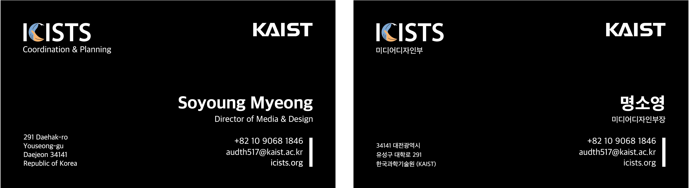
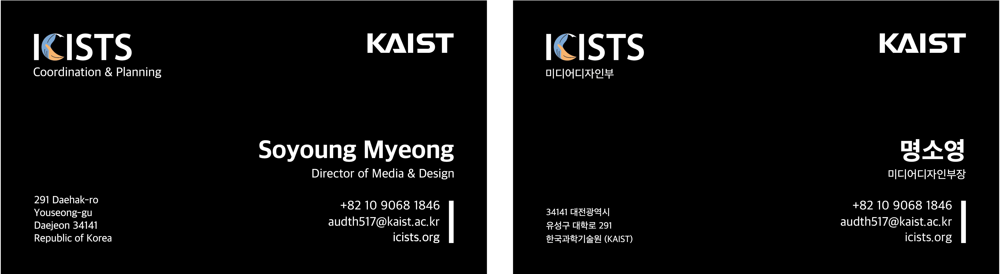

ICISTS (International Challengers for the Integration of Science, Technology, and Society) is a KAIST undergraduate organization that hosts international academic events for university students.
The previous logo, composed of a quill pen, a drawn line, and the ICISTS letters, did not clearly express ICISTS’s vision of connecting institutions, industries, and individuals through academic events. To better communicate this vision, our department redesigned the logo and expanded the overall visual identity system.
By rotating the letter “C” by 90 degrees, the form becomes a visual metaphor for a handshake, symbolizing connection, collaboration, and integration. In addition to the logo redesign, we defined logo applications for both light and dark backgrounds and introduced a new color palette and identity typeface, establishing a cohesive and contemporary CI system.
 
